Why Transition Metals Have High Melting Points
Video not playing? YouTube
In transition metals the (n−1)d electrons join the ns electrons in metallic bonding, so the bonds are strong and the metals are hard with high melting points. Across the 3d series melting points peak near the middle (Mn is an exception) and fall to zinc (d¹⁰).
Download the short notesPDF, 163 KB · solved examples, practice set and answer key Download the memory cards
PDF, 886 KB · 7 cards: the whole topic at a glance, for quick revision Download the workbook
PDF, 184 KB · fill in the blanks, true/false, assertion-reason, MCQ, numericals, short answer, match the columns; detailed solutions at the end Up next in this chapter
 Five More Protons, Same Size: Radius and Ionisation Enthalpy across the 3d SeriesAcross the 3d series each new electron enters the inner (n−1)d subshell and shields the outer 4s electrons, nearly cancelling the extra nuclear charge. So atomic radii change only slightly and the first ionisation enthalpy rises slowly (631 → 906 kJ/mol), unlike across a normal period.Chemistry
Five More Protons, Same Size: Radius and Ionisation Enthalpy across the 3d SeriesAcross the 3d series each new electron enters the inner (n−1)d subshell and shields the outer 4s electrons, nearly cancelling the extra nuclear charge. So atomic radii change only slightly and the first ionisation enthalpy rises slowly (631 → 906 kJ/mol), unlike across a normal period.Chemistry
Key points
- Metallic bonding: positive ions held together by a sea of electrons.
- In transition metals, (n−1)d electrons join the ns electrons in bonding → stronger bonds → high melting points, hardness, low volatility.
- 3d series: melting points peak near the middle (V, Cr); Mn is anomalously low.
- Zn, Cd, Hg (d¹⁰) melt low; mercury is a liquid.
3d melting points (°C)
| Sc | Ti | V | Cr | Mn | Fe | Co | Ni | Cu | Zn |
|---|---|---|---|---|---|---|---|---|---|
| 1541 | 1668 | 1910 | 1907 | 1246 | 1538 | 1495 | 1455 | 1085 | 420 |
The rise follows the growing number of unpaired d electrons available for bonding (up to about d⁵); after that electrons pair up and the melting points fall.
Group 12
Zinc (420 °C), cadmium (321 °C) and mercury (−39 °C) have a full d¹⁰ subshell, so their metallic bonding is weak. Mercury is a liquid at room temperature.
Memory cards
Swipe through the 7 cards to revise this topic in a minute.
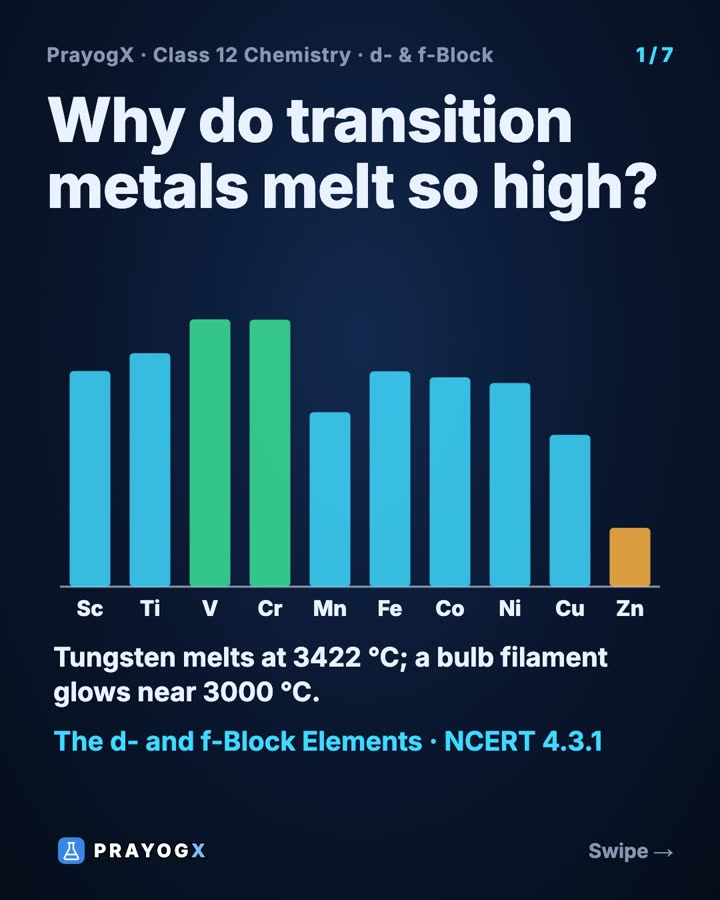
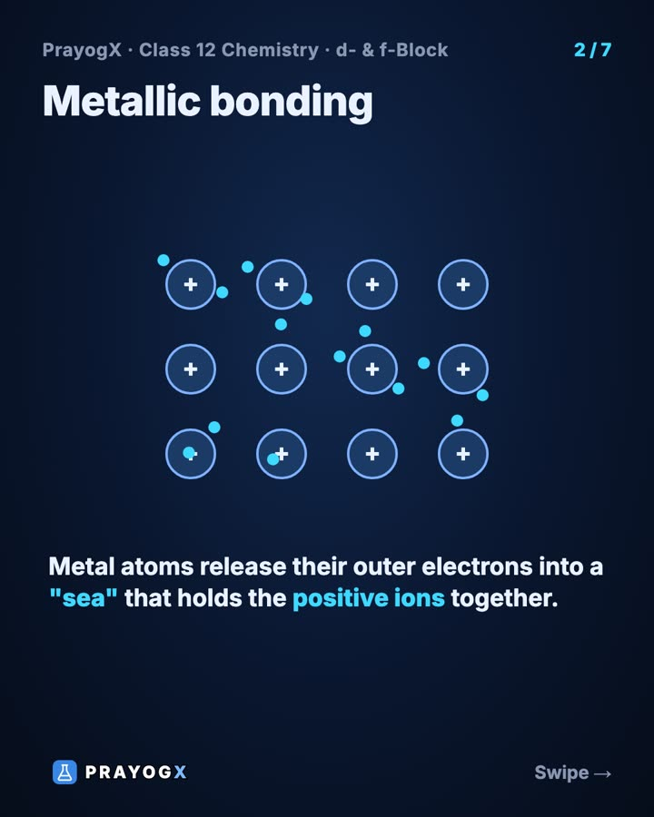
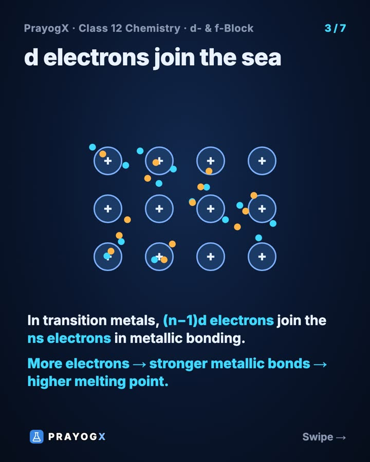
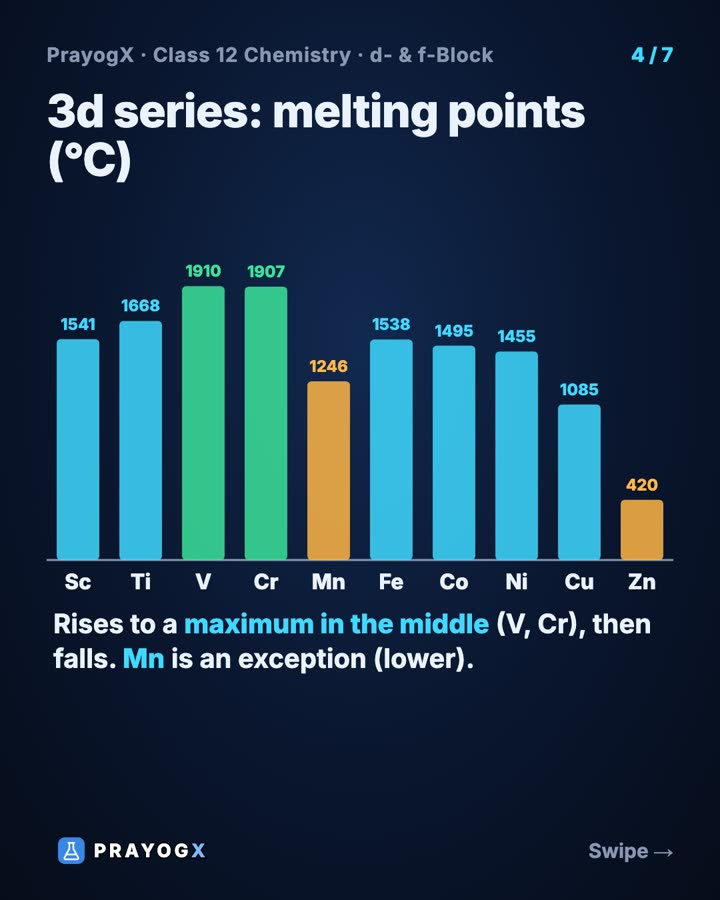
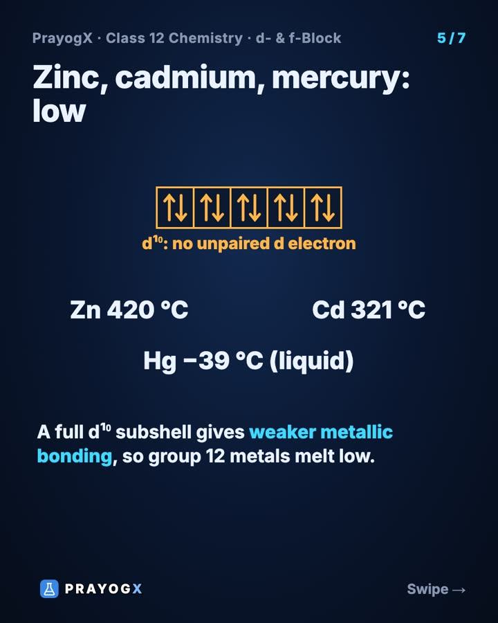
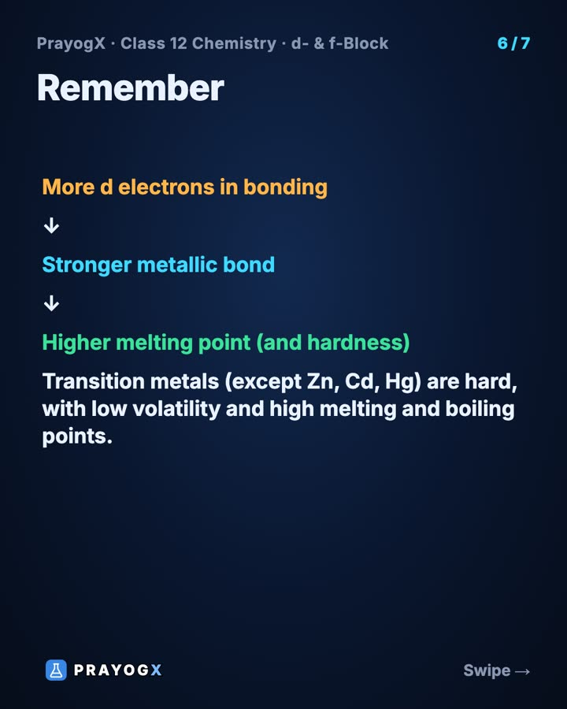
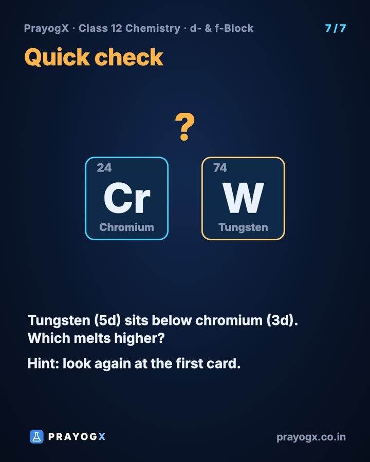
PDF, 886 KB · 7 cards: the whole topic at a glance, for quick revision
Quick quiz
5 questions. Choose an answer for each, then submit to see your score and the explanations.
More from The d- and f-Block Elements
 d-Block Configurations: Why Chromium and Copper Break the RuleThe d-block's general configuration is (n−1)d¹⁻¹⁰ ns¹⁻², with 4s filling before 3d. Chromium (3d⁵4s¹) and copper (3d¹⁰4s¹) move one 4s electron into 3d, because 3d and 4s are very close in energy and half-filled and full d sets are extra stable.Chemistry
d-Block Configurations: Why Chromium and Copper Break the RuleThe d-block's general configuration is (n−1)d¹⁻¹⁰ ns¹⁻², with 4s filling before 3d. Chromium (3d⁵4s¹) and copper (3d¹⁰4s¹) move one 4s electron into 3d, because 3d and 4s are very close in energy and half-filled and full d sets are extra stable.Chemistry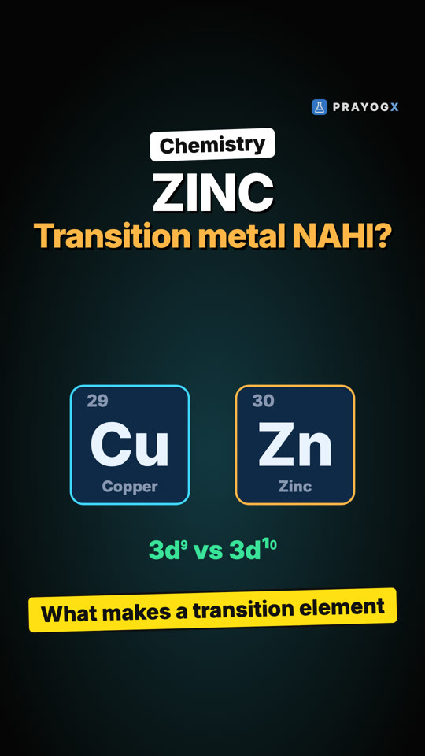
Zinc Is in the d-Block, So Why Is It Not a Transition Metal?A transition element has an incompletely filled d subshell in its atom or in a common ion. Iron (3d⁶) passes; copper (3d¹⁰ atom) passes through Cu²⁺ (3d⁹); zinc stays 3d¹⁰ even as Zn²⁺, so Zn, Cd and Hg are d-block but not transition metals.Chemistry The d- and f-Block Elements: Chapter IntroductionIron bridges, copper wires and bright blue, purple and orange solutions all come from one part of the periodic table. The d-block (groups 3–12) fills d orbitals; the f-block (two rows below) fills f orbitals. Variable oxidation states, colour, magnetism and catalysis make them special.Chemistry
The d- and f-Block Elements: Chapter IntroductionIron bridges, copper wires and bright blue, purple and orange solutions all come from one part of the periodic table. The d-block (groups 3–12) fills d orbitals; the f-block (two rows below) fills f orbitals. Variable oxidation states, colour, magnetism and catalysis make them special.Chemistry One Element, Six Oxidation States: Why Transition Metals VaryThe ns and (n−1)d electrons of a transition metal are close in energy, so both can take part in bonding. Manganese (3d⁵ 4s²) shows every state from +2 to +7; the most states occur in the middle of the series, Sc shows only +3 and Zn only +2, and the states change in steps of one.Chemistry
One Element, Six Oxidation States: Why Transition Metals VaryThe ns and (n−1)d electrons of a transition metal are close in energy, so both can take part in bonding. Manganese (3d⁵ 4s²) shows every state from +2 to +7; the most states occur in the middle of the series, Sc shows only +3 and Zn only +2, and the states change in steps of one.Chemistry Zinc Fizzes, Copper Stays Silent: Electrode Potentials of the 3d MetalsCopper is the only 3d metal with a positive E°(M²⁺/M) (+0.34 V), so it gives no H₂ with dilute acids. Turning Cu(s) into Cu²⁺(aq) costs more (atomisation + two ionisations) than hydration pays back: 921 against zinc's 711 kJ/mol. Stable d⁵ and d¹⁰ bend the trend: Mn and Zn dip, Mn³⁺ is a strong oxidant, Fe³⁺ is stable.Chemistry
Zinc Fizzes, Copper Stays Silent: Electrode Potentials of the 3d MetalsCopper is the only 3d metal with a positive E°(M²⁺/M) (+0.34 V), so it gives no H₂ with dilute acids. Turning Cu(s) into Cu²⁺(aq) costs more (atomisation + two ionisations) than hydration pays back: 921 against zinc's 711 kJ/mol. Stable d⁵ and d¹⁰ bend the trend: Mn and Zn dip, Mn³⁺ is a strong oxidant, Fe³⁺ is stable.Chemistry Fluorine Fails, Oxygen Wins: Highest Oxidation States in Oxides and FluoridesA metal reaches its highest oxidation state only with oxygen or fluorine. Fluorine is the more electronegative, yet manganese's highest fluoride is MnF₄ (+4) while its oxide reaches +7 (Mn₂O₇, MnO₄⁻): one oxygen forms a multiple bond and counts two electrons, one fluorine counts only one. From Sc₂O₃ to Mn₂O₇ the highest oxide's oxidation state equals the group number.Chemistry
Fluorine Fails, Oxygen Wins: Highest Oxidation States in Oxides and FluoridesA metal reaches its highest oxidation state only with oxygen or fluorine. Fluorine is the more electronegative, yet manganese's highest fluoride is MnF₄ (+4) while its oxide reaches +7 (Mn₂O₇, MnO₄⁻): one oxygen forms a multiple bond and counts two electrons, one fluorine counts only one. From Sc₂O₃ to Mn₂O₇ the highest oxide's oxidation state equals the group number.Chemistry A Balance That Counts Electrons: Paramagnetism and the Spin-only Magnetic MomentEvery electron is a tiny magnet; in a pair the spins cancel, so only unpaired electrons make an ion paramagnetic. Count them from the ion's d configuration (singly up to d⁵, then pairing) and the spin-only formula gives the magnetic moment: μ = √(n(n+2)) BM, from 1.73 for one unpaired electron to 5.92 for Mn²⁺ (d⁵). A measured μ (Gouy balance) counts the unpaired electrons.Chemistry
A Balance That Counts Electrons: Paramagnetism and the Spin-only Magnetic MomentEvery electron is a tiny magnet; in a pair the spins cancel, so only unpaired electrons make an ion paramagnetic. Count them from the ion's d configuration (singly up to d⁵, then pairing) and the spin-only formula gives the magnetic moment: μ = √(n(n+2)) BM, from 1.73 for one unpaired electron to 5.92 for Mn²⁺ (d⁵). A measured μ (Gouy balance) counts the unpaired electrons.Chemistry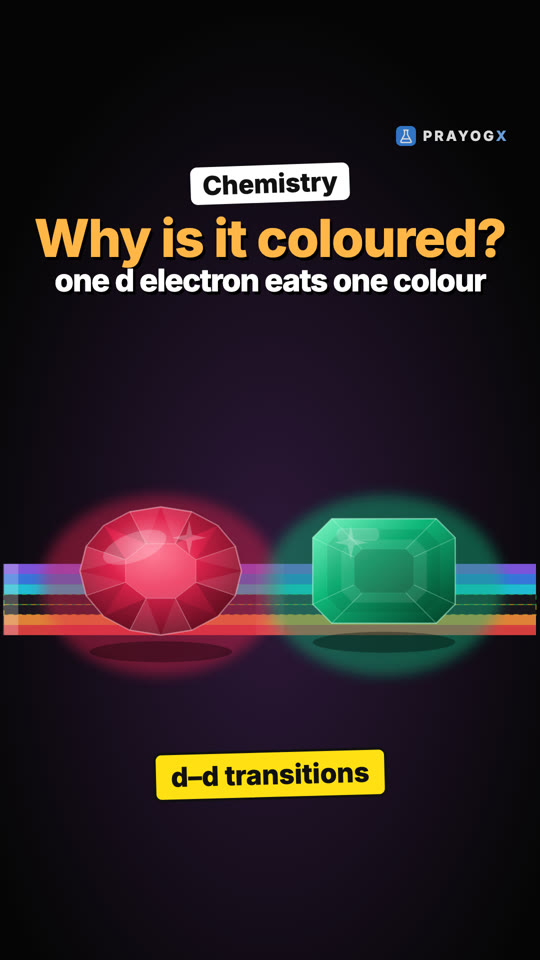
The Light Thief: Why Transition-Metal Ions Are ColouredLigands split the five d orbitals of a transition-metal ion into a lower and an upper level. A d electron absorbs the one band of visible light whose energy equals the gap and jumps up (a d–d transition); the rest of the light reaches the eye, so we see the complementary colour: Ti³⁺(aq) eats green-yellow and looks purple, Cu²⁺(aq) eats red-orange and looks blue. The ligand sets the gap (ruby and emerald are both Cr³⁺), and d⁰ / d¹⁰ ions such as Sc³⁺ and Zn²⁺ are colourless.Chemistry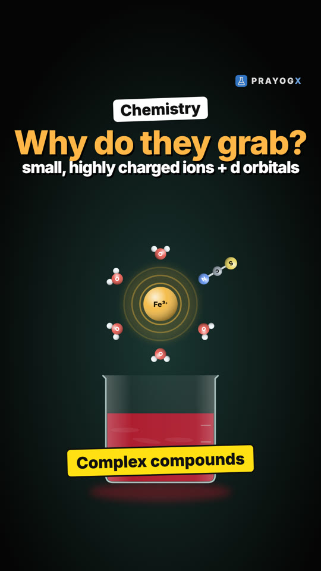
One Drop, Blood Red: Why Transition Metals Form ComplexesA complex is a central metal ion bonded to several ligands (anions or neutral molecules) by coordinate bonds, in which the ligand gives both electrons. One drop of KSCN turns pale-yellow Fe³⁺ blood red as [Fe(SCN)(H₂O)₅]²⁺ forms, while the K⁺ from the same drop grabs nothing. Transition-metal ions form far more complexes because they are small (Fe³⁺ 65 pm vs K⁺ 138 pm), highly charged (+3 vs +1) and have d orbitals available for bond formation.Chemistry Iron, Nitrogen and an Electron Ferry: Why Transition Metals Are Good CatalystsA catalyst speeds up a reaction without being used up by lowering its activation energy. Transition metals are good catalysts because they can adopt multiple oxidation states and form complexes. On a metal surface (iron in the Haber process, V₂O₅ in the Contact process, nickel in hydrogenation) reactant molecules bond to surface atoms using 3d and 4s electrons, so their concentration rises and their bonds weaken. In solution, Fe³⁺ ferries electrons between I⁻ and S₂O₈²⁻ (2Fe³⁺ + 2I⁻ → 2Fe²⁺ + I₂; 2Fe²⁺ + S₂O₈²⁻ → 2Fe³⁺ + 2SO₄²⁻) and is regenerated.Chemistry
Iron, Nitrogen and an Electron Ferry: Why Transition Metals Are Good CatalystsA catalyst speeds up a reaction without being used up by lowering its activation energy. Transition metals are good catalysts because they can adopt multiple oxidation states and form complexes. On a metal surface (iron in the Haber process, V₂O₅ in the Contact process, nickel in hydrogenation) reactant molecules bond to surface atoms using 3d and 4s electrons, so their concentration rises and their bonds weaken. In solution, Fe³⁺ ferries electrons between I⁻ and S₂O₈²⁻ (2Fe³⁺ + 2I⁻ → 2Fe²⁺ + I₂; 2Fe²⁺ + S₂O₈²⁻ → 2Fe³⁺ + 2SO₄²⁻) and is regenerated.Chemistry Iron Bends, Steel Holds: Interstitial Compounds and AlloysPure iron bends because layers of atoms slide over each other; less than 2 % carbon in the gaps locks the layers and gives hard steel. Interstitial compounds form when small atoms such as H, C or N are trapped in a metal lattice (TiC, Mn₄N, Fe₃H, VH₀.₅₆, TiH₁.₇): non-stoichiometric, very hard, higher melting than the pure metal, still conducting and chemically inert. Alloys form when atoms of similar size (metallic radii within about 15 %, e.g. Fe 126 and Cr 129 pm) are distributed randomly among each other: stainless steel, brass (Cu–Zn) and bronze (Cu–Sn), hard and often high melting.Chemistry
Iron Bends, Steel Holds: Interstitial Compounds and AlloysPure iron bends because layers of atoms slide over each other; less than 2 % carbon in the gaps locks the layers and gives hard steel. Interstitial compounds form when small atoms such as H, C or N are trapped in a metal lattice (TiC, Mn₄N, Fe₃H, VH₀.₅₆, TiH₁.₇): non-stoichiometric, very hard, higher melting than the pure metal, still conducting and chemically inert. Alloys form when atoms of similar size (metallic radii within about 15 %, e.g. Fe 126 and Cr 129 pm) are distributed randomly among each other: stainless steel, brass (Cu–Zn) and bronze (Cu–Sn), hard and often high melting.Chemistry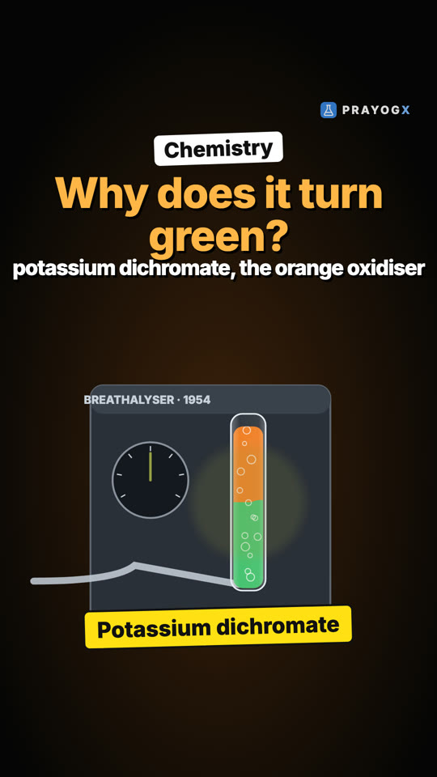
The Orange That Turns Green: Potassium DichromatePotassium dichromate is made from chromite ore: fusion with sodium carbonate in air gives yellow sodium chromate (Fe₂O₃ is filtered off), acid turns it into orange sodium dichromate (two CrO₄ tetrahedra share one oxygen), and KCl precipitates the less soluble K₂Cr₂O₇. Chromate and dichromate interconvert with pH while Cr stays +6. In acid, Cr₂O₇²⁻ + 14H⁺ + 6e⁻ → 2Cr³⁺ + 7H₂O (E° = 1.33 V): a strong oxidising agent that turns orange to green, oxidising Fe²⁺, I⁻, H₂S and, in the 1954 breathalyser, ethanol.Chemistry The Mineral Chameleon: Potassium PermanganatePotassium permanganate is made by fusing pyrolusite (MnO₂) with KOH and an oxidiser to give dark green potassium manganate (Mn +6). In neutral or acidic water manganate disproportionates (3MnO₄²⁻ + 4H⁺ → 2MnO₄⁻ + MnO₂ + 2H₂O), the 'mineral chameleon' Glauber saw; commercially it is oxidised at an anode. In acid MnO₄⁻ takes 5 electrons to give almost colourless Mn²⁺ (so it is its own indicator in titrations); in neutral or faintly alkaline solution it takes 3 electrons and gives brown MnO₂.Chemistry
The Mineral Chameleon: Potassium PermanganatePotassium permanganate is made by fusing pyrolusite (MnO₂) with KOH and an oxidiser to give dark green potassium manganate (Mn +6). In neutral or acidic water manganate disproportionates (3MnO₄²⁻ + 4H⁺ → 2MnO₄⁻ + MnO₂ + 2H₂O), the 'mineral chameleon' Glauber saw; commercially it is oxidised at an anode. In acid MnO₄⁻ takes 5 electrons to give almost colourless Mn²⁺ (so it is its own indicator in titrations); in neutral or faintly alkaline solution it takes 3 electrons and gives brown MnO₂.Chemistry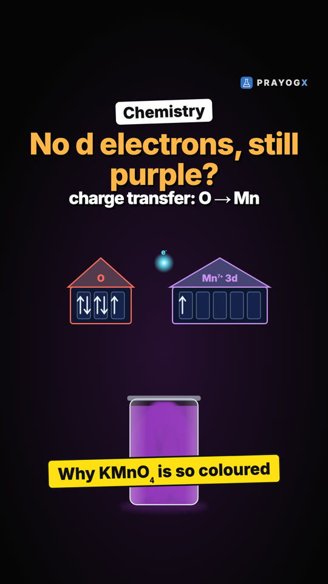
No d Electrons, Still Purple: Why KMnO₄ Is So Intensely ColouredIn MnO₄⁻ manganese is +7 (3d⁰), so no d–d transition is possible. The colour comes from ligand-to-metal charge transfer: visible light moves an electron from an oxygen into the empty d orbitals of Mn. This absorbs green-yellow light (≈ 525 nm), so the solution looks purple. Charge transfer is an allowed transition, so it absorbs far more light than restricted d–d transitions: KMnO₄ is intensely coloured while Ti³⁺(aq) or Mn²⁺(aq) are pale. Chromate (yellow) and dichromate (orange), also d⁰, are coloured the same way.Chemistry Same Face, Different Inside: The LanthanoidsThe lanthanoids (lanthanum and the fourteen elements after it) have the general configuration [Xe] 4f¹⁻¹⁴ 5d⁰⁻¹ 6s². Each new electron goes into the deep 4f subshell, shielded by 5s²5p⁶, while the outer 6s² stays the same, so the elements are very alike (the Ytterby minerals took chemists over a century to sort out). Losing 6s² and one more electron gives the characteristic +3 state (La³⁺ 4f⁰ … Lu³⁺ 4f¹⁴). +4 and +2 appear near empty, half-filled or full 4f (Ce⁴⁺ 4f⁰, Tb⁴⁺ 4f⁷, Eu²⁺ 4f⁷, Yb²⁺ 4f¹⁴), but Ce⁴⁺ is a strong oxidant and Eu²⁺ a strong reductant: both return to +3.Chemistry
Same Face, Different Inside: The LanthanoidsThe lanthanoids (lanthanum and the fourteen elements after it) have the general configuration [Xe] 4f¹⁻¹⁴ 5d⁰⁻¹ 6s². Each new electron goes into the deep 4f subshell, shielded by 5s²5p⁶, while the outer 6s² stays the same, so the elements are very alike (the Ytterby minerals took chemists over a century to sort out). Losing 6s² and one more electron gives the characteristic +3 state (La³⁺ 4f⁰ … Lu³⁺ 4f¹⁴). +4 and +2 appear near empty, half-filled or full 4f (Ce⁴⁺ 4f⁰, Tb⁴⁺ 4f⁷, Eu²⁺ 4f⁷, Yb²⁺ 4f¹⁴), but Ce⁴⁺ is a strong oxidant and Eu²⁺ a strong reductant: both return to +3.Chemistry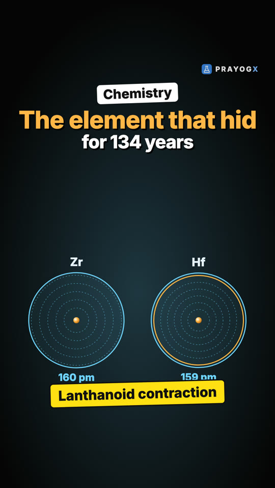
The Element That Hid for 134 Years: Lanthanoid ContractionHafnium sat in zircon beside zirconium but was found only in 1923, 134 years after zirconium, because the two are almost the same size (Zr 160 pm, Hf 159 pm) despite Hf's 32 extra electrons and extra shell. Between them in period 6 sit the 14 lanthanoids, across which the size of atoms and Ln³⁺ ions decreases steadily (La³⁺ ≈ 103 pm → Lu³⁺ ≈ 86 pm): the lanthanoid contraction. Each step adds a proton while the new electron enters 4f, which shields poorly (s > p > d > f), so the outer electrons are pulled in. The contraction cancels the expected increase in period 6: Zr ≈ Hf, Nb ≈ Ta, Mo ≈ W; Zr and Hf (and the lanthanoids) are hard to separate; and the basicity of Ln(OH)₃ decreases from La to Lu.Chemistry